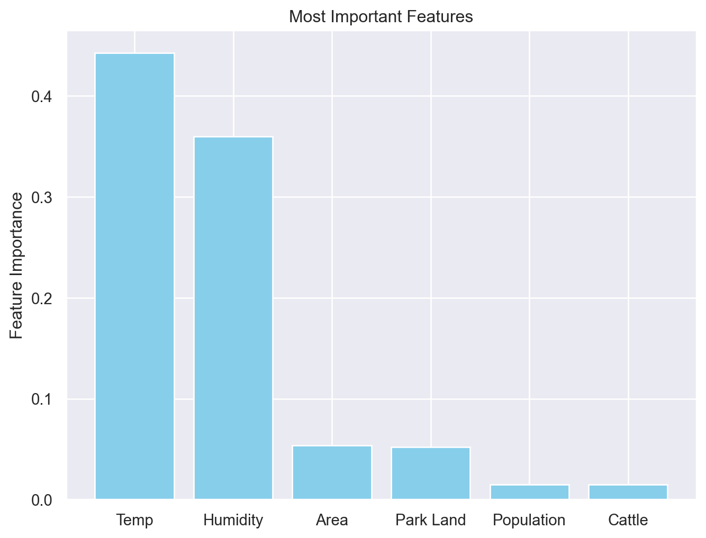
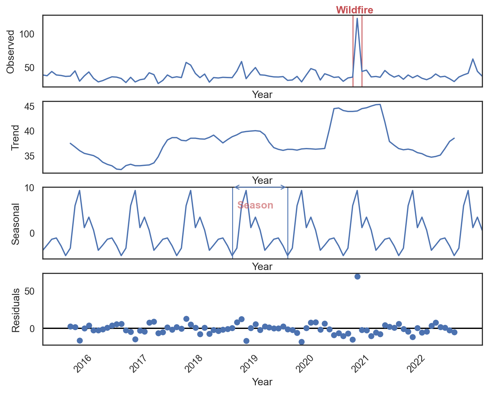

![]()
Cohen Kappa Score: 0.4540612461353385
Accuracy: 0.7272727272727273Introduction
In their journal article published in The American Journal of Public Health, Jacobs, Burgess, and Abbott tell the story of the Donora Pennsylvania Smog crisis. On October 30, 1948, the Donora High School Football team played through a dense smog to complete the game with hundreds of fans in the audience, despite very poor visibility. The team, fueled by resilience, took pride in playing through poor conditions, a testament to the high spirit of the small town. Soon after, calls to the town’s medical offices began flooding in, complaining of difficulty breathing and respiratory issues. Donora, Pennsylvania, was a town of metalworks, built by the American Steel and Wire company and the Donora Zinc Works company, which made up major parts of the town’s economy. The heavy smog and pollution clouds that covered the sky had been viewed as a sign of prosperity, owing to the industrial might that powered their economy. Within just twelve hours, seventeen people would be dead, 1440 seriously affected, and 4470 with mild to moderate conditions—almost half the town’s working population (Jacobs, Burgess, Abbott).
This event, known as the Donora Smog of 1948, prompted the country into taking a closer look at the negative impacts of air pollution. Widespread debate surrounding the event led to the first legislation aimed at regulating the air quality within the United States, ushering in a new era of tracking, combatting, and reversing the ill effects of poor air quality. The quality of air we breathe has direct impacts on our health. We must understand the factors that contribute to poor air quality and how we individually and collectively contribute to these changes. Until we can visualize the impact we have on our atmosphere, we will continue behavior that negatively impacts the air around us.
In this project, we will focus on the key factors influencing air quality in Portland, Oregon. We aim to understand the complex interplay between various environmental and human-made factors that contribute to high air pollution levels. Initially, we were surprised to discover that Portland, the city we reside in, has some of the best air quality for a city of its size in the United States. This led us to narrow our focus to understanding the factors that contribute to these favorable outcomes in this city.
Our project aims to develop and validate machine learning models to analyze the various factors influencing air quality. By focusing on Portland in comparison to other large US cities, we hope to find things Portland does that lead to the greater AQI outcomes. Our approach will consider a range of variables, including meteorological conditions, pollution sources, transit systems, park land, and livestock. Through this analysis, we aim to provide actionable insights and recommendations for sustaining and improving air quality. By examining both the contributors to clean air and the sources of pollution, we can understand the factors affecting air quality and develop comprehensive strategies for enhancement.
Background
Federal regulation of air quality in the United States began in 1955 with the Air Pollution Control Act. This new piece of legislation provided funding for initial research into air quality and pollution in the US. Building off this and privately funded research, Congress passed the Clean Air Act of 1963, establishing the first federal regulation for controlling air pollution. This act established a new federal program within the US Public Health Service, dedicated to the monitoring and control of air quality. In 1967, Congress passed the Air Quality Act, which introduced more federal oversight and enforcement policies, allowing extensive monitoring of interstate air pollution. This all led to the passage of the 1970 Clean Air Act, aimed at restricting and regulating emissions, measuring and reducing pollutant particles, and addressing upcoming pollution threats (Environmental Protection Agency).
Also established in 1970, the Environmental Protection Agency (EPA) implemented and monitored the requirements established by these rulings. The EPA’s authority extended beyond federal lands and roads to include all companies operating within the United States. Enforcement authority was expanded to allow upholding these established standards, and prevent companies from circumventing the law. Much of the improvement in the quality of air in the US over the past fifty years can be attributed to these regulations. In 1990, when deaths due to air quality were first measured, an estimated 135,000 Americans died. By 2010, that number had dropped to 71,000 (Zhang et al.). Despite the significant improvements led by the federal guidelines of the late 70s, nearly four in ten Americans still live in places where they are exposed to unhealthy air (American Lung Association).
In 1999, the EPA developed the Air Quality Index (AQI), creating an easily understood measurement of air quality. The AQI measures air pollution levels on a scale from 0 to 500, divided into six categories. A score of 0 to 50 represents good air quality which poses little or no risk to those breathing it in, while a score above 300 signifies emergency conditions, an extremely high risk which impacts everyone. This measurement is mainly derived from five major pollutants: ozone (O3), particulate matter (2.5μm and 10μm), carbon monoxide (CO), nitrogen dioxide (NO2), and sulfur dioxide (SO2) (Airnow.gov). Poor air quality has been linked to a variety of diseases including respiratory infections, stroke, heart disease, lung cancer, and chronic obstructive pulmonary disease, among others (World Health Organization). An estimated seven million premature deaths annually can be attributed to air pollution, which equates to a global mean loss of life expectancy of 2.9 years, making it the largest environmental risk factor for disease and premature death (Fuller, Landrigan, Balakrishnan, et al.). Thus, it is important to understand factors that contribute to poor air quality, and outcomes that can be attributed to the state of the AQI.
These harmful factors can originate from a variety of sources. Anything that releases a foreign substance into the air can lower the AQI. This includes smoking, vehicle exhaust, combustion processes for production and manufacturing, household cleaning products, appliances, central air and heating systems, agriculture pesticides, livestock, shipping and transportation, and much more. Individually, we can reduce our individual contributions by lowering our reliance on personal vehicles, watching our power usage, supporting companies that monitor and address their emissions, and more. However, there are many factors beyond our control. Larger pollutant sources, such as manufacturing and transportation, are often regulated to some extent but may still release significant amounts of pollutants into the atmosphere which we as individuals have no say over (Manisalidis, Stavropoulou, Stavropoulos, Bezirtzoglou). It is challenging to restrict and watch our personal contributions to the polluting of the environment without worrying about what others are doing. Measuring and analyzing the impact these pollutants have on air quality is a crucial step towards addressing these issues.
Data Ethics
The ethical implications of conducting this analysis should always be considered and addressed. Air quality has historically impacted lower income communities significantly more. Marginalized communities may be built near major pollution sources such as factories or highways. In Portland, for example, Interstate 5 completed construction in 1966. It was part of an Oregon State Highway Department (OSHD) development, a project run by the state as a part of the Federal Aid Highway Act. The highway was built on the existing Minnesota Avenue, cutting North Portland, the heart of Portland’s African American community in half. It was decided to avoid affecting the higher income downtown properties. In fact, the OSHD contracted work on the Minnesota Ave portion of the highway to private contractors, in an effort to avoid a political battle (Oregon Encyclopedia). Today, the neighborhoods surrounding the large highway have worse AQI outcomes than those further away, all other factors equal (Shandas and George). Any recommendations given by this analysis should properly consider the ramifications of those impacted.
Another important ethical issue to be aware of is data transparency. Data can be used to push a specific narrative without faking or editing the specific data points. By leaving out important information, pushing correlated data as causation to push an agenda, or by purposely misconstruing what the data means, one can create a narrative that can misinform or deceive readers. All analysis methodology must be openly discussed to ensure full understanding by audiences. This leads to credibility, reproducibility, and trust in the methods and conclusions of any piece of data analysis. All data is sourced from credible online sources that are open about their collection methods. Data privacy is addressed and no personalized information is given. Limitations are also addressed allowing readers to understand where any uncertainty may be.
Methods
Python will be the primary programming language used to conduct this analysis. We will also use R language in statistical applications. To perform our analysis, we will employ the NumPy and Pandas libraries for data manipulation, Matplotlib and Seaborn for visualization, and Time Series forecasting algorithms such as Prophet and SARIMAX. We will address data inconsistencies, missing values and ensure that data is in a tidy format. We may need to normalize or standardize data if necessary and create new features through aggregation to enhance the model’s performance.
Prophet
Prophet is an open-source forecasting tool developed by Meta, designed for forecasting time series data. It is suited for datasets with strong seasonal, monthly, weekly, or daily patterns, and it handles missing data and outliers well. We utilized prophet to gain a quick understanding of our AQI patterns, seeking to understand basic trends before conducting a more thorough analysis.
Key features of Prophet include seasonality detection and holiday incorporation, while providing easy use and understanding for users. We can use this software to get complex understanding from simple applications.
To conduct this analysis, we prepare data into a two column table, with columns date and AQI. Prophet uses the trends of past data to highlight similarities over days of the year, weeks, months, and seasons. From this, prophet is able to generate its predictions, cross validate, and give performance metrics such as mean absolute percentage error to quantify the accuracy of the results
SARIMAX
The most common method used in time series forecasting is known as the ARIMA model. We will use an extended version called SARIMAX (Seasonal Auto Regressive Integrated Moving Averages with exogenous factor)
- (S) Seasonality: Accounts for recurring patterns or cycles in the data.
- (AR) AutoRegressive: Uses past values to predict future values.
- (I) Integrated: Applies differencing to make the time series stationary.
- (MA) Moving Average: Uses past forecast errors in the prediction.
- (X) eXogenous factors: Incorporates external variables that may influence the forecast.
The SARIMAX model is used when the data sets have seasonal cycles. In the dataset concerning the air quality/AQI there is a seasonal pattern. SARIMAX can be fitted to time series data in order to better understand or predict future points. SARIMAX is particularly useful for forecasting time series data that exhibits both trends and seasonality. There are three distinct integers (p,d,q) that are used to parametrize SARIMAX models. Because of that, SARIMAX models are denoted with the notation SARIMAX(p,d,q). Together these three parameters account for seasonality, trend, and noise in datasets:
- p is the auto-regressive part of the model. It allows us to incorporate the effect of past values into our model.
- d is the integrated part of the model. This includes terms in the model that incorporate the amount of differencing (the number of past time points to subtract from the current value) to apply the time series.
- q is the moving average part of the model. This allows us to set the error of our model as a linear combination of the error values observed at previous time points in the past.
We use a tuning technique called grid search method that attempts to compute the optimum values of the hyperparameters. We are trying to find the right p,d,q values that would be given as an input to the SARIMAX time series model.
Akaike Information Criteria (AIC)
<<<<<<< Updated upstream The Akaike Information Criterion (AIC) is a measurement used to compare different statistical models. It helps in model selection by balancing the goodness of fit and the complexity of the model. When comparing two models, the one with the lower AIC is generally “better”. ======= The Akaike Information Criterion (AIC) was formulated by the statistician Hirotsugu Akaike, is a measure used to compare different statistical models. It helps in model selection by balancing the goodness of fit and the complexity of the model. When comparing two models, the one with the lower AIC is generally “better”.
The Akaike Information Criterion (AIC) is defined as:
\[ \text{AIC} = 2k - 2\ln(\hat{L}) \]
Where:
- ( k ) is the number of parameters in the model.
- ( ) is the maximum value of the likelihood function for the model.
- ( () ) is the natural logarithm of the likelihood function.
Interpretation
- Likelihood Function (()): Measures how well the model fits the data. A higher likelihood indicates a better fit.
- Penalty Term ((2k)): Accounts for the number of parameters in the model, penalizing more complex models to avoid overfitting.
Usage
When comparing multiple models, the model with the lowest AIC value is generally preferred because it offers a better balance between goodness of fit and complexity.
Example
For a linear regression model, the likelihood function () is calculated based on the residual sum of squares (RSS). The formula can be expressed as:
\[ \text{AIC} = 2k + n \ln\left(\frac{\text{RSS}}{n}\right) \] Where ( n ) is the number of observations. Here, RSS is the sum of the squared differences between the observed and predicted values, reflecting the model’s fit to the data. >>>>>>> Stashed changes
Here’s how to interpret the AIC value:
- AIC Value: A lower AIC value indicates a better-fitting model. It means the model has a good balance between accuracy and complexity.
- Comparative Measure: AIC is most useful when comparing multiple models. The model with the lowest AIC among a set of candidate models is generally preferred.
- Penalty for Complexity: AIC includes a penalty for the number of parameters in the model. This discourages overfitting by penalizing models that use more parameters without a corresponding improvement in fit.
Train-Test-Split
Rigorous validation is paramount to establishing the model’s reliability and practical application. To ensure the model’s generalizability, we will employ a train-test split. This approach safeguards against overfitting by exposing the model to unseen data, allowing for a more accurate assessment of its predictive capabilities.
By partitioning the dataset, we can:
- Evaluate performance: Measure the model’s accuracy on unseen data.
- Detect overfitting: Identify discrepancies between training and testing performance.
- Assess generalization: Determine the model’s ability to handle new data.
- Quantify reliability: Calculate confidence intervals for prediction accuracy.
- Iteratively improve: Use insights to refine the model.
This rigorous process underpins the credibility and utility of our research findings. To split the data, we follow the recommended 70:30 ratio, 70% of the data is the training data, and 30% of the data is the testing data.
Hypothesis Testing
Hypothesis tests for significance are conducted to understand the significance of differences in datasets. Statistics are done in R using a variety of statistical methods and measurements:
- Null Hypothesis: This serves as the baseline of a hypothesis test. It represents the idea that there is no effect, difference, or relationship between tested variables. Any observed differences are due to random chance.
- Alternate Hypothesis: On the other hand, the alternative hypothesis suggests a potential effect, difference, or relationship between tested variables exists. It reflects what is hoped to be found by the data.
- Independence: The idea that data in one sample or population has no impact on the data in another sample or population.
- Normal Distribution: A continuous probability distribution symmetric around the mean. It is characterized by mean and standard deviation.
- Normal QQ Plot: A plot to measure the normality of a distribution. It compares the quantiles of a dataset against the quantiles of a theoretical normal distribution. Data is mapped along a y=x trendline. Deviations of the data from the trendline indicate non normality. An “S” shaped bend suggests data with heavy or light tails. A convex or concave bend suggests skewness in the distribution.
- Histogram: Plot that displayed data frequencies of values within specified intervals known as bins. Histograms are used to visualize the shape and spread of a distribution.
- Welch Two Sample t-test: This type of hypothesis test measures the statistical significance of the difference in mean of the two samples. Unlike the Student’s two sample t-test, the Welch two-sample t-test is used in cases where the groups being compared have unequal variances. A Welch two sample t-test includes the following:
- t-Statistic (t): Difference between sample means relative to variance of samples. Larger t-statistics indicate larger differences between means.
- Degrees of Freedom (df): Amount of information available to estimate variance of sample means.
- p-Value: The probability of observing the sample data or something more extreme if the null hypothesis is true. A small p-value (< 0.05) suggests the observed difference is statistically significant.
- 95 Percent Confidence Interval: Range in which the true difference in means is 95% likely to lie within.
Machine Learning
Machine learning is done in scikit-learn, an open source ML library built in Python. It is built on top of other common Python libraries such as NumPy, Pandas, and Matplotlib. The following tools are used:
- One Hot Encoder: Transforms categorical data into a binary matrix. Each category is represented as a vector where one element is tagged with a 1 and all others are tagged as 0. This is done for certain machine learning algorithms that require all discrete data.
- Standard Scaler: Used to normalize or standardize numerical data. Certain machine learning algorithms are affected by unscaled data and therefore require normalized data.
- Transformer: Can be used to change multiple variables in one step in methods such as One Hot Encoder and Standard Scaler.
- Pipeline: Allows multiple functions in a series of steps that can include transformers and models. Incorporates chaining to supply the output of one step as the input of the next step.
- Feature Selection: Chooses a subset of most relevant features, with the ability to specify how many features.
- Hyperparameter Optimization: Selects the best set of hyperparameters in a model. These hyperparameters are set before training and control various aspects of the training process and model behavior. The optimization method used is a Randomized search. This evaluates a fixed number of random combinations from a specified distribution. This is far more efficient than a Grid search which systematically checks every single combination of the specified hyperparameter distribution.
- Cohen Kappa Score: A statistical measure used to assess agreement between two classifiers when they categorize items into classes. In ML specifically, the Cohen Kappa Score is used to evaluate agreement between predicted and actual labels in classification algorithms. It is measured on a scale from -1 to 1, where 1 represents perfect agreement in classifiers, 0 represents agreement being no better or worse than random chance, and -1 represents perfect disagreement.
- Random Forest Model: An ensemble model used in prediction tasks. It combines multiple decision trees and aggregates their predictions to improve performance and reduce overfitting.
- Confusion Matrix: Measures and visualizes the accuracy of a classification model. It breaks down raw numbers of correctly and incorrectly classified values.
- Classification Report: A detailed evaluation of the prediction model. Includes:
- Precision: The ratio of correctly predicted positive observations to the total predicted positives
- Recall: The ratio of correctly predicted positive observations to all observations
- F1 score: Mean of precision and recall
- Support: Number of observations
Reference Machine Learning Metrics Table in Appendix for additional information.
Data
The data for this project was initially scattered across multiple sources and required significant organization and compilation. The focus of this project is on the air quality in Portland, Oregon, so various data sources were aggregated and processed to compare a variety of air quality indicators. There is a significant amount of missing data due to incomplete collection which will be addressed via filling in and row dropping.
Air Quality Data
Air quality data, specifically AQI values, were obtained from the United States Environmental Protection Agency (EPA) pre generated data files. The AQI values are calculated daily, based on a variety of factors including criteria gasses and measured pollutant concentrations, and measures how harmful breathing the air is. AQI is classified into one of six categories from ‘good’ to ‘hazardous’, each having long term health effects associated with it. The files were given daily on a county wide basis, separated into different files by year. After stacking year outputs together in R, columns regarding date, location (state, county), AQI, and AQI category were brought into the database.
Meteorological Data
Historical weather data was also sourced from the EPA database, measured by thousands of weather stations across the country. Measurements tracked include temperature, wind speed, air pressure, and humidity. Temperature is measured in degrees fahrenheit. Wind speed is measured in knots, which are defined as one nautical mile per hour (equivalent to approximately 1.15mph). Wind speed is important in air quality as winds can blow different pollutants around and move and spread wildfires. Pressure is measured in millibars, where 1013.25 millibars is the standard atmospheric pressure (Earth’s pressure at mean sea level). Finally, humidity is measured in percent relative humidity. This is the amount of water vapor in the air as a percentage of the maximum amount of water vapor possible at a given temperature. Humidity can make it more difficult to breathe and sweat, make the air feel hotter than it is, and prevent air pollutants from dispersing as easily. This data was given daily by city, separated into different files by year. Measurements were taken hourly, but pre-aggregated in the source database, giving an average value over the twenty four hours and a maximum value. After stacking years in R, columns regarding date, location (state, city), weather observation average and maximum, and observation unit were brought into the database.
Pollution Source Data
Pollution data was again sourced from the EPA database, separated by criteria gasses (CO, NO2, O3, SO2), Toxins (lead), and particulate matter (PM2.5 and PM10). Criteria gas Carbon Monoxide (CO) is measured in parts per million, and is especially dangerous as it is both colorless and odorless. CO binds to hemoglobin in the blood, making the transportation of oxygen around the body more difficult. Nitrogen Dioxide (NO2) is dangerous to breathe in at high levels. It can cause swelling in the throat, burning, reduced oxygenation of body tissues, and fluid build up in the lungs. It is released in many common combustion reactions including in cars, coal plants, and cigarettes. It is measured in parts per billion. Ozone (O3) can harm our ability to breathe, especially in older people, children, and people with asthma. It is measured in parts per million. Sulfur Dioxide (SO2), measured in parts per billion, can irritate the eyes, mucous membranes, skin, and the respiratory tract. Lead is a toxin which can increase the risk of high blood pressure, cardiovascular problems, and complications during pregnancy. While exposure has gone down significantly in the recent decades after use in gasoline, it still remains a dangerous toxin to breathe in. It is measured in micrograms per cubic meter. PM2.5 and PM10 are particulate matter, small inhalable particles with diameters of 2.5 microns or smaller, and 10 microns or smaller respectively. PM2.5 includes all sorts of common particles, metals, and organic compounds. PM10 includes dust, pollen, molds, and other larger (but still very small) particles. Due to the variability of particles included in the PM classification, there are a wide range of negative health impacts that come from breathing in these particles. PM2.5 and PM10 are measured in micrograms per cubic meter.
This data was given daily by city, separated into different files by year. They are sourced from thousands of individual sources, which measure various selections of these pollution sources. Because of the variety of different pollutants being measured, there was a significant amount of missing data, especially from small towns. Measurements were taken hourly, pre-compiled into a daily average and maximum. After stacking years in R, columns regarding date, location (state, city), pollutant observation average and maximum, and observation unit were brought into the database.
Public Transit Data
Information on motor buses was taken from the National Transit Database, produced by the Federal Transit Administration. It includes information of bus systems and ridership by city, separated by year. Data is recorded yearly, encompassing annual totals for information such as number of buses, total revenue, passengers, and miles driven for the respective city transit systems. Information was given in yearly CSVs, separated by the city transit system. For cities with multiple systems, data was combined. Only motorbus data was compiled, which may not be reflective of cities with other large methods of public transportation, such as the New York subway system. Only public transit information was able to be collected. Accessible data on cars and trucks could not be found. This will be further discussed in the limitations section of the conclusion. After stacking years in R, columns regarding date, location (state, city), transport mode, number of buses, passenger trips in hours and miles, and bus operations in hours and miles were brought into the database.
Land Area Data
City and county area data was collected from the 2020 U.S. Census, collected by the U.S. Census Bureau. It is measured in km2. City, county, state, city area, and county area columns were brought into the database.
Park Area Data
Park area data is sourced from the Trust for Public Land’s 2024 annual City Park Survey. This information is collected via survey from a variety of park agencies including individual parks and recreation agencies, the National Park Service, the Bureau of Land Management, regional park authorities, private conservancies, watershed management agencies, private park services, and more. Totals are compiled by the Trust for Public Land, and measured in acres. Only location (city, state) and park area columns are brought into the database.
Livestock Data
Information on livestock numbers was collected on a county wide basis from the 2017 United States Census of Agriculture by the National Agricultural Statistics Service within the United States Department of Agriculture. Cattle include cows and bulls raised for meat consumption, cows for milk production, and calves. Hogs includes all pigs, adult and adolescent. Although there are colloquial differences for the animals called hogs and pigs, they refer to the same species, though ‘hogs’ generally refers to the larger members of the species. Sheep includes sheep raised for wool production and lambs. Numbers may have slight inaccuracies for areas with low numbers to prevent disclosing identifying information and are marked with a ‘D’. All of these data points will be replaced with zero. Location (county, state) and livestock varieties (cattle and calves, hogs, sheep and lambs) columns are collected and added to the database.
Population Data
Data on population and population density was sourced from the Simplemaps United States Cities database, which is built from multiple sources including the U.S. Geological Survey and the U.S. Census Bureau. Data was last updated on May 6, 2024, reflecting very up to date information.
Data Organization
Given the raw data available, the table structure was simplified compared to the original data sources. Data was organized around the air_quality table. This table tracks AQI, pollutant, weather and toxin data daily for each location. It includes all 1438 locations with a line for each of the 2922 days in the eight year time period, reaching a total of over 4.2 million rows. Location is split into a separate table to reduce repeated data. This table lists cities, labeled with their city name, county, and state. It includes metropolitan area population data given in raw numbers and as a density. Additionally, this table includes the city area in square kilometers and park area in acres. The aqi_category table is a short list of AQI value categories (Good, Unhealthy, Hazardous, etc.) with their respective AQI value range as minimum and maximum values. The yearly_transit table is connected to the location table and gives the information for the transit system of the respective city during the specified year. Finally, the livestock table, also connected via locations, includes counts for cattle, hogs, and sheep.
The central table has a compound primary key composed of location_id and date. Each other table has a serialized primary key, which are used to connect to each other. Several additional indexes are included on columns that will be queried often. Finally, constraints have been added to limit unusual or impossible data. For example, an AQI value less than 0 or greater than 500 would be impossible and thus would be caught by the constraint.
Tracking these identifiers independently allows for accurate analysis of changes over time and across different areas, and allows adding new information should we need to update the database. Figure 1 illustrates the resulting ERD diagram using drawSQL.

Prophet AQI Trend Forecasting and Statistical Testing
To gain an understanding of how Portland’s AQI differs from other large cities, we can start by running a hypothesis test to determine the significance.
Initially we can run a two sample t-test to show that Portland’s AQI average is statistically greater than the average AQI of all large metropolitan areas within the US. We compare the sample of Portland AQI datapoints in the time period with the sample of all metropolitan areas with a population greater than one million.
Null Hypothesis: The Portland AQI is greater than or equal to the AQI of all large metro cities in the US.
Alternate Hypothesis: The Portland AQI is less than the AQI of all large metro cities in the US.
Assumptions:
Simple Random Sample: Data is a simple random sample. We have selected 10% of values from each population set.
Independence: AQI in Portland does not affect AQI in the rest of the country. However, the dataset for the large metro areas does include Portland, so Portland AQI will be repeated within both population groups. Both groups are largely independent, though this should be noted.
Normal Distribution:

From the QQ plots and histograms, we can see both datasets are clearly not normally distributed. They have long tails to the right. However, since the tails have such low frequencies and the samples are very large, this likely will not impact the results.
The partial violations of the assumptions in the t-test in our analysis suggest that the conclusions should be considered with a degree of caution.
Two-Sample t-Test Portland AQI vs Large Metro Areas AQI

Based on the low P-value of 6.862*10-4, we can safely reject the null hypothesis. We conclude that Portland’s AQI mean is not greater than or equal to the AQI of all large metropolitan areas. This agrees with our initial observations on the greater AQI outcomes of Portland, and specifies the significance of this statistically.
Data Forecasting with Prophet
Prophet by Meta is used as time series prediction to estimate and map trends based on our data. We use this to see how AQI trends vary by day, month, and year. It is also able to give us a forecast for a given period after the end of our data which we can analyze and use to anticipate future AQI values.
To use the package, data must be in the format of a two column graph, with the first column being the date data, and the second being the variable being mapped and predicted. In this case, this predicted variable is AQI.
The package allows a future period to be generated, which can be specified and added to the end of the time data. It can then predict future AQI values for the new data period.
The graph below (figure 3), shows the supplied data with the forecast over the future period. The actual values are shown with the black datapoints, and the blue line represents the prediction. The upper and lower bounds of the error are represented with the transparent blue area. Each year, the data spikes during the late summer to early fall. Even more significant, is the large spike in September 2020. What caused it? How significant was it?

2020 Wildfires
In September 2020, a wildfire ravaged the state of Oregon, as well as many other areas of the United States and Canada. The fires burned more than one million acres of land, destroying thousands of homes, and killing 11 people. 500,000 Oregonians were on evacuation alert, and 40,000 were actually forced to leave (Oregon Department of Emergency Management). Anyone around during that time will recall the orange skies, thick atmosphere, and strong smoke smell, but how unusual was this period actually?
To understand, we will conduct a two sample t-test to see whether or not this month had greater than usual AQI.
Null Hypothesis: September 2020 AQI is less than or equal to AQI of entire period in Portland
Alternate Hypothesis: September 2020 AQI is greater AQI of entire period in Portland
Assumptions:
Simple Random Sample: Data is not a simple random sample. Since there are so few datapoints for the September 2020 population (30 datapoints), taking a 10% sample may not be suitable to accurately capture the variance of this month. Thus, it was decided to use the entire population as the sample. A 10% sample will be taken of the entire Portland data population.
Independence: AQI in September 2020 does not affect AQI in the rest of the timeframe.
Normal Distribution:

From the QQ plots and histograms, we can see both datasets are clearly not normally distributed. They have long tails to the right, and the September 2020 dataset is oddly shaped due to lack of data.
The partial violations of the assumptions in the t test in our analysis suggest that the conclusions should be considered with a degree of caution.
Two-Sample t-Test September 2020 vs Full Period of Portland AQI

Based on the low p value of 1.85*10-3, we reject the null. We conclude that the September AQI in Portland is not less than or equal to the AQI for the entire period. The wildfire had a significant effect on the air quality, making it much more difficult to breathe. This aligns with the observation of the large spike during this period. We must do more to address and combat the wildfires that not only harm the air we breathe, but cause long lasting damage to the local environment.
AQI Trends
Prophet’s plot component function allows us to see specific trends including the total (entire eight years), weekly, and yearly trends in figure 5.

This allows us to see how AQI changes by day. In the top full time span graph, it shows the potential spread of data for the predicted period with the transparent blue area. We can also see that day of the week tends to have very little impact on the trend (it may look significant but it is only moving up and down less than 1.5 AQI between days). Finally, from the yearly graph we can see the consistent increase during the late summer to mid fall each year.
Cross Validation
How accurate are these predictions? A cross validation predicts over the period from the cutoff date up to specified date.
Cross validating the predictions allows us to create many estimates from a starting date up to an end date within our timeframe. In this instance, the tool predicts using start dates every half a year. It will predict AQI for that date to every day up to a year after the start date, giving us 365 estimates per start date. We then compare all estimations, seeing how accurate the prediction is for a number of days after the start date.
The tool allows us to measure the difference in predicted y and actual y with a variety of different measurements. In figure 6 below, we have selected mean absolute percent error, to show if the error on average increased as the prediction got further from the starting point.

The light grey datapoints represent the mean absolute percent error. A datapoint with a x value 200 and y value 1 means it was predicted for a period of 200 days after the cutoff date, and was 1% off the actual value. We can see that most predictions are under 1%, making this a pretty decent estimation. The fact that they do not increase over time allows us to have a certain degree of confidence in the prediction even a year out. The blue line shows the mean of these predictions.
Portland’s Transit System
As shown in the graphs and tests above, Portland has greater than normal AQI outcomes when compared with other cities of high populations. The AQI follows certain yearly trends, with the notable exception in September 2020 due to the large wildfires. Using Prophet, we are able to predict AQI up to a year out of the final datapoint in the time period. What exactly is the reason for these outcomes in this city?
One hypothesis for Portland’s better air quality outcomes is due to the increased focus on public transportation. Portland has placed high emphasis on utilizing public transit, with rates comparable to larger cities and higher than most other cities of its size. We will run a two sample t test to see how Portland’s rate of ridership compares with other large cites.
We have standardized rates by passenger miles ridden per person. This is the total amount of miles ridden in a given year divided by the population. This allows us to properly compare cities with different population sizes.
Null Hypothesis: Transit ridership in Portland is less than or equal to transit ridership across the country (large metro areas only).
Alternate Hypothesis: Transit ridership in Portland is greater than transit ridership across the country (large metro areas only).
Assumptions:
Simple Random Sample: Data is not a simple random sample. Since there are so few datapoints for the Portland transit ridership population (8 datapoints), taking a 10% sample may not be suitable to accurately capture the variance of this month. Thus, it was decided to use the entire population as the sample. A 10% sample will be taken of the large cities transit population.
Independence: Transit ridership in Portland does not affect transit ridership in the rest of the country.
Normal Distribution:

From the QQ plots and histograms, we can see both datasets are clearly not normally distributed. The Portland data has so few datapoints that it is hard to tell if it has a normal distribution or not. The large city transit data seems fairly normal, though it too does not have enough datapoints to visually approach a bell curve in the histogram.
The partial violations of the assumptions in the t test in our analysis suggest that the conclusions should be considered with a degree of caution.
Two-Sample t-Test Portland Transit Ridership vs Large Metro Area Ridership

Based on the high p value of 0.2469, we fail to reject the null. We cannot conclude that Portland’s transit ridership is different from the average transit ridership of other large metro areas across the country. Transit ridership may have some impact on AQI but not enough to make a statistical difference by itself. Likely, this is a situation of correlated variables. Cities that invest more in public infrastructure are more likely to make a concerned effort into being environmentally conscious.
It should also be noted that some cities have higher public transit numbers not reflected in the data. For example, in New York City, subway ridership is almost double that of its motor bus numbers. In this data, only motor bus numbers were included which may contribute to the lack of evidence for transit numbers influence on AQI. We will explore which features have a greater effect on AQI in the upcoming Machine Learning section.
Machine Learning with Scikit-Learn
Ultimately, we want to see which variables have the greatest impact on AQI. To do this we perform a machine learning analysis and create a prediction algorithm. As the AQI is defined by the four criteria gasses and particulate matter (PM10 and PM2.5), those should not be included in the algorithm. Thus we start with all the other variables.
After data is cleaned, we are left with a total of eighteen cities across the country with a total metropolitan area population of greater than one million. To perform the ML prediction algorithm, AQI will be predicted. We will use existing AQI categories as classifiers. A feature selector is run on the set of all variables except for the six that define AQI (CO, NO2, O3, SO2, PM10, PM2.5). This chooses the best predictors of the dependent variable AQI.
Features Selected in Initial Model:
- City
- Month
- Population
- City Area
- Park Area
- Temperature
- Humidity
- Cattle
In pre testing, it was found that a Random Forest Model performed the best on this dataset. Therefore, this model type is used in all models.
An initial Random Forest Model run with the selected features returns the following Cohen Kappa score and accuracy:

Looking only at Cohen Kappa score and accuracy, this seems like a good prediction model. However, the confusion matrix shows the data’s skew, centered around the 0-100 range. Therefore, more bins and bin size combinations are tested in order to provide a more meaningful prediction.
After further testing the following bins were decided on:
- 0-25
- 26-50
- 51-75
- 76-100
- 101-200
- 201-500
As bins are made smaller, predictions become far less accurate. This bin size serves as a good balance between having enough bins to generate conclusions and maintaining decent accuracy. Different bin sizes also lead to different features being selected. The following features will be present in the final model:
- City
- Population
- City Area
- Park Area
- Temperature
- Humidity
- Cattle
Hyperparameter optimization will be done to further improve the model. A randomized search is run with 100 iterations. The following hyperparameters are optimized:
- Max Categories
- Min Frequency
- Max Depth
- Max Features
- Min Samples Leaf
- Min Samples Split
- Num Estimators
- Bootstrap
Table 1 below shows the selected hyperparameters.
| Parameter | Value | |
|---|---|---|
| 0 | RF_model__bootstrap | True |
| 1 | RF_model__max_depth | 8 |
| 2 | RF_model__max_features | None |
| 3 | RF_model__min_samples_leaf | 4 |
| 4 | RF_model__min_samples_split | 7 |
| 5 | RF_model__n_estimators | 147 |
| 6 | aqi_transformer__categories__max_categories | 5 |
| 7 | aqi_transformer__categories__min_frequency | 8 |
Table 2 below shows the selected hyperparameters having hyperparamenter optimization
Using these hyperparameters, we reach an accuracy of over 70%.
Cohen Kappa Score: 0.46261234174643673
Accuracy: 0.7158410451823626
We can use this model for the prediction of AQI, exploring the features that predict it, and use that to generate conclusions for what variables or systems should be addressed.
Below, the table 3 shows a classification report of the model. Support represents the amount of data points total in that bin. We can see that AQI groups with more data tend to be more accurate (higher f1-score). This makes sense as the model has more of this data to train on. To make the model more accurate, more data from AQI values outside this 26-200 range will need to be collected.
| precision | recall | f1-score | support | |
|---|---|---|---|---|
| 0-25 | 0.000000 | 0.000000 | 0.000000 | 5.0 |
| 26-50 | 0.785470 | 0.869442 | 0.825326 | 1057.0 |
| 51-75 | 0.613240 | 0.584718 | 0.598639 | 602.0 |
| 76-100 | 0.387755 | 0.175926 | 0.242038 | 108.0 |
| 101-200 | 0.568182 | 0.416667 | 0.480769 | 60.0 |
| 201-500 | 0.000000 | 0.000000 | 0.000000 | 5.0 |
Table 3: Final Model Classification Report)
We can also take a look at which features end up being most influential in the model. Below figure 13 shows Temperature and Humidity being by far the most influential variables in the model. However, temperature and humidity are not variables we can directly impact easily, and therefore, the four other variables are where we should put our efforts.

Figure 13: Feature Importance of Selected Variables in Final Model
Machine Learning SARIMAX
A time series is a sequence of data points collected at regular intervals over a period of time. These intervals are typically uniform, such as hourly, daily, or quarterly measurements.
This orderly arrangement allows for the analysis of trends, patterns, and behaviors over time.
Common examples of time series data include stock market closing prices, household electricity consumption readings, and weather measurements.
In the context of our capstone project, we’re focusing on air quality index measurements as our time series data. This sequential record of air quality provides insights into pollution trends and can be used to forecast future air quality conditions.
Any time series is composed of three things:
- Trend: Trend tells you how things are overall changing
- Seasonality: Seasonality shows you how things change within a given period (e.g. year,month, week, day)
- Residual: The Error/residual/irregular activity are the anomalies which cannot be explained by the trend or the seasonal value
Statsmodel
Using the statsmodel package, we can map the seasonal pattern and trends using seasonal_decompose method. It requires as inputs a dataframe with two columns date data and the AQI.
Components Of A Time Series
Time series decomposition is a statistical technique that separates data into three key components: trend, seasonality, and residuals.
The trend shows the long-term direction, seasonality reveals recurring patterns, and residuals represent unexplained variations.
Visualizing these components individually provides insights that may not be evident in the raw data. This process helps analysts identify underlying patterns, recognize cyclical behaviors, and detect anomalies. By understanding these elements separately, we can gain deeper insights into the factors driving the time series, leading to more accurate analysis and forecasting.
Decomposition is particularly useful when the complexity of a time series makes it challenging to discern important patterns from simple observation of the dataset.

Figure 14: Seasonal, Trend, and Residual Decomposition of Portland AQI Time Series
The uppermost graph, labeled Observed, presents the raw time series data as originally recorded. Its y-axis quantifies the daily air quality measurements, while the x-axis represents the passage of time.
This graph is a composite representation, effectively combining the three underlying components: trend, seasonality, and residuals.
A notable anomaly is evident in the data: a significant spike in air quality measurements occurring in September 2020. This outlier corresponds to the severe wildfires that ravaged Oregon during that period. The dramatic increase in air pollution levels during this time underscores the profound impact of extreme environmental events on air quality.
The Seasonal component graph illustrates the cyclical patterns in air quality that repeat annually. This visualization reveals a distinctive yearly pattern in Air Quality Index (AQI) fluctuations. The cycle begins with relatively low AQI values, indicating better air quality. As the year progresses, the AQI rises to a peak, signifying a period of poorer air quality. This is followed by an improvement (decrease in AQI), another deterioration (increase), and a final improvement towards the year’s end.
These recurring variations likely reflect the influence of seasonal factors such as changing weather patterns, temperature inversions, and seasonal human activities. For instance, winter months might see higher AQI due to increased heating emissions, while spring could bring lower AQI with more favorable dispersion conditions.
The graph includes a highlighted box that demarcates the seasonal period. This visual element clearly illustrates the duration and boundaries of one complete seasonal cycle in the air quality data. Understanding these seasonal trends is crucial for accurately interpreting air quality data and making informed predictions.
It allows environmental agencies and policymakers to anticipate periods of potentially compromised air quality and plan interventions accordingly.
Lastly, the final row displays the Residuals, which represent the portion of the data not explained by the trend or the seasonal component. We can interpret the residuals as the difference between the sum of the Trend and Seasonal components and the Observed values at each point in time.
Essentially, the Residuals indicate the amount that needs to be added to the Trend and Seasonal components to align the result with the Observed values. Residuals are typically attributed to random errors, often referred to as noise. These residuals embody the unpredictable elements of the data that cannot be captured or forecasted by the model, as they are inherently random.
Finding the Best Forecasting Model with Grid Search
For this project, we used an extended version of ARIMA model knows as SARIMAX model as we have explained in the methods section. We use a tuning technique called grid search method that attempts to compute the optimum values of hyperparameters. We are trying to find the right p,d,q values that would be given as an input to the SARIMAX time series model.
Here’s an easy-to-understand explanation of how this works:
Step 1: Setting Up Our Hyperparameters
We define p,d,q hyperparameters to take any value between 0 to 1 which help the model decide how much weight to give to past values, trends, and patterns.
We then create a list of all p,d,q possible combinations of these settings in a for loop.
Step 2: Trying Out Different Combinations
We go through each combination of settings to see how well each one works. For each main setting, we also try different seasonal settings to find the perfect combination.
Step 3: Checking the Results
For each set of p,d,q settings, we create a forecasting model and test it on our data. We measure how well each model works using a score called the Akaike Information Criterion (AIC) as mentioned in the methods section. This score tells us how well the model predicts the data, with lower scores being better.
If something goes wrong with a particular set of hyperparameter settings, we catch the error and move on to the next set without stopping the whole process.
We have found the lowest AIC values which would have the best corresponding p,d,q values to have the best forecast of AQI values.
SARIMAX Model Results
| SARIMAX Results |
|---|
| Dep. Variable: aqi |
| Model: SARIMAX(1, 1, 1)x(0, 1, 1, 12) |
| Date: Thu, 15 Aug 2024 |
| Time: 12:09:16 |
| Sample: 01-31-2015 - 12-31-2022 |
| No. Observations: 96 |
| Log Likelihood: -330.316 |
| AIC: 668.632 |
| BIC: 678.307 (Bayesian Information Criterion) |
| HQIC: 672.519 (Hannan-Quinn Information Criterion) |
| Covariance Type: opg (Outer Product of Gradients) |
Interpretation
This summary presents a concise overview of the SARIMAX model’s performance and fit.
The SARIMAX(1, 1, 1)x(0, 1, 1, 12) model integrates both non-seasonal and seasonal components, effectively capturing both immediate and periodic influences on the Air Quality Index (AQI). The model utilizes 96 observations, providing a robust dataset for accurate model fitting.
Key metrics such as the log-likelihood, AIC, BIC, and HQIC are used to assess the model’s effectiveness, with lower values typically indicating a better fit that balances complexity and accuracy.
The summary also includes the date and time of model execution, the timeframe of the data, and the type of covariance used, which aids in understanding how the model accounts for uncertainties in parameter estimates.
Next, we extract the coefficient, standard errors, z-values, p-values, and 95% confidence intervals for the SARIMAX model parameters. This information is crucial for evaluating the significance and reliability of each parameter estimate
Autoregressive Term (ar.L1)
- Coefficient: 0.0483 Suggests a slight positive influence of the previous observation on the current value.
- Standard Error: 0.306 Indicates significant variability in the coefficient estimate.
- Z-Value: 0.158 Low value, indicating the coefficient is not statistically significant.
- P-Value: 0.875 Not significant (p-value > 0.05).
- Confidence Interval: [-0.551, 0.648]
- Includes zero, reinforcing the lack of significance.
Moving Average Term (ma.L1)
- Coefficient: -1.0000 Implies the model tries to correct nearly all errors from the previous period.
- Standard Error: 924.523 Extremely large, pointing to high uncertainty in the estimate.
- Z-Value: -0.001 Near zero, indicating no statistical significance.
- P-Value: 0.999 Not significant.
- Confidence Interval: [-1813.031, 1811.031] Very wide and includes zero, confirming lack of significance.
Seasonal Moving Average Term (ma.S.L12)
- Coefficient: -1.0000 Attempts to correct errors regarding data seasonality.
- Standard Error: 2355.498 Very large, indicating substantial uncertainty.
- Z-Value: -0.000 Near zero, suggesting no significance.
- P-Value: 1.000 Not significant.
- Confidence Interval: [-4617.692, 4615.692] Wide interval, includes zero, further indicating no significance.
Variance of the Residuals (sigma2)
- Coefficient: 134.1503 Represents the variance of the residuals or errors.
- Standard Error: 335000 Extremely high, showing great uncertainty.
- Z-Value: 0.000 Indicates no statistical significance.
- P-Value: 1.000 Not significant.
- Confidence Interval: [-657000, 657000] Very wide, includes zero, highlighting lack of significance.
Fit SARIMAX model
The AIC value is: 668.6317406918595When working with SARIMAX models, there are typically several plots you might analyze, such as:
- Time Series Plot of Residuals: Shows the residuals over time. Ideally, residuals should appear as random noise without clear patterns.
- ACF and PACF Plots of Residuals: Autocorrelation Function (ACF) and Partial Autocorrelation Function (PACF) plots help identify if the residuals of the model are uncorrelated. For a well-fitting model, residual autocorrelations should be small and within the significance bounds.
- Q-Q Plot: This plot compares the distribution of residuals to a normal distribution. Points should ideally lie along the line of best fit.
- Forecast Plot: Displays the fitted values versus the actual values and includes forecasted values. A good model will have fitted values close to the actual values with narrow confidence intervals

Once the model is created, predicted values are generated using the .get_prediction() method, with datetime as input.
To facilitate comparison of true and predicted test values, we will create a separate DataFrame. Mean Error Estimation will be used for analysis.
To evaluate model performance, we calculate the MSE.
The Mean Squared Error of our forecasts is 0.83In the context of predicting the Air Quality Index (AQI), the Mean Squared Error (MSE) is indeed an indicator of the average squared difference between the predicted AQI values and the actual AQI values.
Forecasting Future Values
As we conclude our modeling process, we generate predictions for the next 30 data points:
Model Information: The
resultvariable contains our fitted model’s details.Forecasting Method: We use the
.get_forecast()method on our model results.Prediction Generation: This method analyzes observed patterns in our data to project future values.
Output: We obtain forecasts for the next 30 time points, representing predicted air quality levels.
This step transforms our analytical work into actionable insights for air quality management.
Visualizing Our Results
The final and crucial step of our project is the creation of a comprehensive plot that encapsulates our complex analysis. This visualization serves as the key to understanding and interpreting our findings.
Interpreting the Forecast Plot
Our plot consists of several key elements:
- Observed Values (Blue Line)
- Represents the actual, historical air quality measurements
- Provides a baseline for comparing our predictions
- Forecasted Values (Orange Line)
- Depicts the future air quality levels predicted by our SARIMAX Time Series Model
- Allows us to visualize potential trends and patterns in air quality
- Confidence Interval (Shaded Region)
- The shaded area around the forecast line represents the 95% Confidence Interval (CI)
- Indicates the range within which we can be 95% confident that the true future values will fall
- Wider intervals suggest greater uncertainty in the prediction
This visual representation not only summarizes our extensive data analysis but also provides a powerful tool for understanding potential future air quality trends. It bridges the gap between complex statistical models and actionable insights, making our findings accessible and meaningful to a broader audience.

Figure 16: Portland AQI Plot Forecast from 2023 to 2025
Overall Conclusion
None of the coefficients in the SARIMAX model are statistically significant, as indicated by the high p-values and z-values close to zero. This means that the parameters do not effectively predict the AQI data. The large standard errors and wide confidence intervals point to a high degree of uncertainty in the parameter estimates. This suggests the model may not be well-suited for capturing the dynamics of the AQI data, and re-evaluation of the model or data is recommended. Our conclusion is that the SARIMAX model did not predict well the forecast values of the air quality index (AQI).
Possible Reasons for Poor Performance
Model Mis-specification: The chosen order of the SARIMAX model, including the autoregressive, differencing, and moving average components, may not be suitable for capturing the dynamics of the AQI data. This can lead to the model failing to capture trends and seasonal patterns accurately.
Overfitting or Underfitting: A high p-value for the model coefficients suggests that these parameters are not statistically significant. This could be a sign of overfitting, where the model is too complex and captures noise instead of the underlying pattern, or underfitting, where the model is too simple to capture the complexity of the data.
Residual Diagnostics: The residuals from the SARIMAX model may not be normally distributed or might exhibit autocorrelation, as seen in the plot diagnostics. This violation of assumptions indicates that the model is not capturing all the patterns in the data.
External Influences: The SARIMAX model may not account for all external factors influencing AQI, such as sudden changes in weather conditions, wildfires, or policy changes affecting pollution levels.
SARIMAX model: The SARIMAX model is quite intricate and can be challenging to comprehend fully.
Conclusion
After conducting our thorough research, we have landed on these specific recommendations. We found there are high seasonal trends where late summer/early fall tends to have the worst air quality. These numbers consistently show up each year, exasperated by the dry heat and lack of rainfall. As climate change raises temperatures and water sources dry up, wildfire season will continue to get worse over time. We must be aware of the nature of air quality and how it differs at different parts of the year. We should understand how the AQI works, and avoid being outside for too long when it reaches more dangerous levels.
Air quality is significantly affected by various natural and unpredictable elements, including:
- Weather conditions
- Wind speed and direction
- Temperature fluctuations
- Humidity levels
- Atmospheric pressure
- Solar radiation intensity
With multiple factors we have no control over, it is important to do what we can for those factors we can impact.
We must focus on the variables that have the greatest impact on the AQI. These are city, temperature, humidity, CO, NO2, O3, PM10, and PM2.5. City, temperature, and humidity for the most part are out of our control. That leaves us with three criteria gasses and all particulate matter. The largest source of carbon monoxide, nitrogen dioxide, and ozone is the cars, trucks, and other vehicles we use daily (Environmental Protection Agency). We can lower our reliance on personal vehicles by utilizing public transportation, carpooling, walking, biking, increasing work from home to lower commutes when available, and overall be more considerate about if driving a car is necessary. We often drive unnecessarily, out of convenience or impatience.
For many Americans, personal vehicles are required. Many urban and suburban areas lack proper public transportation, or existing public transportation systems are inadequate, unreliable, and infrequent. Many towns and cities in the United States were designed for cars instead of for people. Fixing this will require a substantial overhaul, necessitating millions or billions of dollars in spending. This is not to say that we shouldn’t bother—any investment that increases the public transportation system’s usage decreases the amount of cars on the road. A small change is the first step in addressing the personal vehicle issue.
Industrial manufacturing processes and agriculture are significant polluters of the environment. We should invest in the research of more environmentally friendly manufacturing methods, working with materials that require less combustion, or are recyclable. Agricultural reduction starts with less of a reliance on red meat and the dairy industry, mainstays of the American diet. This will be a huge shift, taking combined efforts of the citizens, government, and food industry. As red meat and dairy consumption goes down, possibly due to the replacement with artificial or lab grown meat, less livestock will need to be kept, and less feeding crops will need to be grown (Congressional Budget Office). It will be a difficult transition but a necessary one.
Wildfires not only increase the particle matter in the air, but burn forests, causing long term damage to the soil. Particulate matter in the air makes it more difficult to breathe, which is reflected by the increased AQI levels. Not all forest fires are started by man made sources, but many are. Therefore, when in the woods, one should always obey fire restrictions, especially in the middle of the summer when it’s most dry. If fires are allowed, they should always be watched and never left unattended. They must always be properly extinguished and all embers must be cool to the touch before leaving. Campsites should be properly cleaned, and all tools used correctly. One should also stay on marked trails, avoiding trampling vegetation which can increase the risk of wildfire spreading (Oregon Wildfire Response and Recovery).
One of the largest limitations is Algorithm Dependence. This is the reliability of forecasts which are inherently tied to the chosen predictive algorithms. Different models may yield varying results, emphasizing the importance of algorithm selection and validation.
We must also be wary of geographical considerations. Our data analysis couldn’t fully quantify the unique geographical features of Portland and the broader Willamette Valley region. In further analysis we should seek to understand:
- The protective influence of surrounding mountain ranges
- The impact on wind patterns and air circulation
- The potential effects of wildfires on air quality
These geographical factors play a significant role in local air quality dynamics but were beyond the scope of our current data set. The impact of the geological features can be seen in the image below illustrates how the surrounding mountains create a basin effect, trapping pollutants and contributing to higher air pollution levels. The concentrated red and orange areas, particularly on right side of the Willamette Valley.Do the mountains in the image seem to create barriers to air flow, potentially trapping pollutants in certain areas? 
By recognizing these limitations, we can better interpret and apply our forecasting results, while also identifying areas for future research and data collection to enhance prediction accuracy.
Ultimately, we have a responsibility to take care of our planet and combat climate change. The worse climate conditions get, the more wildfires will spread, and the worse the air quality will become. As time goes on, with worsening air conditions, more people will catch and even die from preventable conditions sparked by poor air quality. Water, pollution, food, and financial problems will get worse. One should look at what they can do to make a difference, support those who vouch to make larger changes, and encourage people they know to do the same. While the situation may seem dire, there is hope for progress through concerted and informed efforts.
Appendix
Bibliography
Airly. (n.d.). How does humidity affect air quality? All you need to know. airly.org/en/how-does-humidity-affect-air-quality-all-you-need-to-know/
AirNow. (n.d.). Using air quality index. www.airnow.gov/aqi/aqi-basics/using-air-quality-index
American Lung Association. (n.d.). Key findings: State of the air. www.lung.org/research/sota/key-findings
Broadbent, P., Grantz, D. A., & Leigh, A. (2023). Air quality in cities: Complexities and progress in mitigation. Frontiers in Sustainable Cities, 5. www.ncbi.nlm.nih.gov/pmc/articles/PMC10068020/
California Air Resources Board. (n.d.). Carbon monoxide & health. ww2.arb.ca.gov/resources/carbon-monoxide-and-health
Centers for Disease Control and Prevention, Agency for Toxic Substances and Disease Registry. (2014, October 21). Medical management guidelines for sulfur dioxide. wwwn.cdc.gov/TSP/MMG/MMGDetails.aspx?mmgid=249&toxid=46
Centers for Disease Control and Prevention, Agency for Toxic Substances and Disease Registry. (2023, April 12). Toxic substances portal - Nitrogen oxides. wwwn.cdc.gov/TSP/ToxFAQs/ToxFAQsDetails.aspx?faqid=396&toxid=69
Climate & Clean Air Commission. (n.d.). Methane. Retrieved August 14, 2024, from https://www.ccacoalition.org/short-lived-climate-pollutants/methane
Congressional Budget Office. (2023, May). Reducing emissions from transportation. www.cbo.gov/publication/60030
Environmental Protection Agency. (n.d.-a). Evolution of the Clean Air Act. www.epa.gov/clean-air-act-overview/evolution-clean-air-act
Environmental Protection Agency. (n.d.). Agriculture and aquaculture: Food for thought. Retrieved August 14, 2024, from https://www.epa.gov/snep/agriculture-and-aquaculture-food-thought
Environmental Protection Agency. (n.d.-b). Health effects of ozone pollution. www.epa.gov/ground-level-ozone-pollution/health-effects-ozone-pollution
Environmental Protection Agency. (n.d.-c). Particulate matter (PM) basics. www.epa.gov/pm-pollution/particulate-matter-pm-basics
Federal Transit Administration. (n.d.). NTD data tables. American Public Transportation Association. www.apta.com/research-technical-resources/transit-statistics/ntd-data-tables/
Fuller, R., Landrigan, P. J., Balakrishnan, K., Bathan, G., Bose-O’Reilly, S., Brauer, M., Caravanos, J., Chiles, T., Cohen, A., Corra, L., Cropper, M., Ferraro, G., Hanna, J., Hanrahan, D., Hu, H., Hunter, D., Janata, G., Kupka, R., Lanphear, B., . . . Yadama, G. N. (2022). Pollution and health: A progress update. The Lancet Planetary Health, 6(6), e535-e547. www.thelancet.com/journals/lanplh/article/PIIS2542-5196(22)00090-0/fulltext
Hog Wild Preserve. (n.d.). Pig, boar, or hog: What’s the difference? www.hogwildok.com/blog/336-pig,-boar,-or-hog-what-s-the-difference.html
Jacobs, E. T., Burgess, J. L., & Abbott, M. B. (2018). The Donora smog revisited: 70 years after the event that inspired the clean air act. American Journal of Public Health, 108(S2), S85-S88. www.ncbi.nlm.nih.gov/pmc/articles/PMC5922205/
Manisalidis, I., Stavropoulou, E., Stavropoulos, A., & Bezirtzoglou, E. (2020). Environmental and health impacts of air pollution: A review. Frontiers in Public Health, 8, 14. www.ncbi.nlm.nih.gov/pmc/articles/PMC7044178/
National Agricultural Statistics Service. (2017). 2017 Census of Agriculture. United States Department of Agriculture. www.nass.usda.gov/Publications/AgCensus/2017/Full_Report/Volume_1,_Chapter_1_US/
National Oceanic and Atmospheric Administration. (n.d.). What are a nautical mile and a knot? oceanservice.noaa.gov/facts/nautical-mile-knot.html
National Weather Service. (n.d.). Pressure and winds. www.weather.gov/source/zhu/ZHU_Training_Page/winds/pressure_winds/Pressure.htm
Oregon Encyclopedia. (n.d.). Interstate 5 in Oregon. www.oregonencyclopedia.org/articles/interstate_5_in_oregon/
Oregon Wildfire Response and Recovery. (n.d.). Wildfire prevention. wildfire.oregon.gov/prevention
Portland.gov. (n.d.). City of Portland Charter, Chapter 1. www.portland.gov/charter/1/2
Shandas, V., & George, L. (2009). Neighborhood, neighborhood, neighborhood: Spatial patterns of air toxins and implications for metroscape residents and urban planners. Metroscape, Winter 2009. pdxscholar.library.pdx.edu/cgi/viewcontent.cgi?article=1033&context=usp_fac
Trust for Public Land. (n.d.). Park data downloads. www.tpl.org/park-data-downloads
United States Census Bureau. (n.d.). Home page. www.census.gov/en.html
World Health Organization. (2014, March 25). 7 million premature deaths annually linked to air pollution. www.who.int/news/item/25-03-2014-7-million-premature-deaths-annually-linked-to-air-pollution
World Health Organization. (2022, October 31). Lead poisoning and health. www.who.int/news-room/fact-sheets/detail/lead-poisoning-and-health
Zhang, Y., Cooper, O. R., Gaudel, A., Thompson, A. M., Nédélec, P., Ogino, S. Y., & West, J. J. (2018). Tropospheric ozone change from 1980 to 2010 dominated by equatorward redistribution of emissions. Nature Geoscience, 11, 637-644. acp.copernicus.org/articles/18/15003/2018/
Additional Resources - EDA
Exploratory Data Analysis
We have new dataset metro_1mil.csv. This file was generated using a SQL statement that joins all relevant tables, filtering for metropolitan areas with populations less than or equal to 1 million. This approach limits our EDA to mid-sized metropolitan cities, such as Portland, Oregon.
Let’s plot the AQI data distribution
The DataFrame contains 147039 rows and 44 columns.
By filtering our Dataframe for Oregon state, our DataFrame contains 2922 rows.
Features Engineering
Date Column Preprocessing:
- Converted the date column to DateTime objects for easier manipulation and analysis.
- Extracted additional time-based features: year, month, day of week, and quarter.
Feature Selection:
- Removed irrelevant columns to focus the analysis on pertinent variables.
- Retained features: pollutant, aqi, wind
Missing Value Treatment:
- Identified columns with missing values: most all of them
- Applied mean() imputation method for numerical columns.
- For categorical columns: n/a
Data Types and Memory Usage:
- Optimized data types to reduce memory usage (e.g., using categories for low-cardinality strings, int8/int16 for small integers).
Basic Statistics:
- Generated summary statistics for numerical columns using df.describe().
- Calculated frequency distributions for categorical variables.
Distribution Analysis:
- Plotted histograms and kernel density estimates for main numerical features.
Time Series Components:
- Decomposed time series data into trend, seasonality, and residual components for relevant variables.
Sweetviz Data Report
We have generated Sweetviz statistical report confirming the quality of EDA steps.
Advanced Data Analysis
We have also employed the ydata-profiling package, a powerful Time Series Analysis EDA package that offers more detailed analysis.
We have unlocked time series-specific features using ydata-profiling: We ensure our DataFrame is sorted or specify the sortby parameter, setting tsmode=True when creating the ProfileReport to allow Time Series Feature Identification
The ydata-profiling identifies time-dependent features using autocorrelation analysis.
For recognized time series features, the histograms are replaced with line plots and feature details include new autocorrelation and partial autocorrelation plots.
To handle Multi-Entity Time Series Data, In our case, with category_id, each pollutants represents a distinct time series. For optimal analysis, we filter and profile each pollutant separately
To conclude our exploratory data analysis (EDA) process consisted of two complementary approaches:
- Manual Investigation: We conducted an in-depth, hands-on examination of the dataset.
- Automated Analysis: We leveraged two powerful EDA packages: Sweetviz For quick, visual data summaries, ydata-profiling for more detailed, customizable reports
These methods allowed us to thoroughly evaluate key data quality aspects, including:
- Class balance in categorical variables
- Presence and distribution of missing values (NaN)
- Feature distributions and correlations
- Potential time-series characteristics
This multi-faceted approach ensures a robust understanding of our dataset’s structure, quality, and potential challenges before proceeding with further analysis.
Time Series Visualization in Portland
Carbon Monoxyde (CO), Wind and Air Quality Index (AQI)
CO pollutant refers to carbon monoxide, which is a colorless, odorless, and tasteless gas that can be harmful to human health and the environment. Here’s some key information about CO as a pollutant:
Primarily produced by incomplete combustion of carbon-containing fuels Major sources include vehicle exhaust, industrial processes, and some natural sources like volcanoes
- Slightly less dense than air
- Highly flammable
<Figure size 960x1728 with 0 Axes>
Nitrogen Dioxide (NO2), Sulfur Dioxyde (SO2) and Ozone (O₃)
NO2 (nitrogen dioxide) is an important air pollutant. - Reddish-brown gas with a pungent odor - Part of a group of pollutants known as nitrogen oxides (NOx)
SO2 (sulfur dioxide) is an important air pollutant. - Colorless gas with a sharp, pungent odor - Highly soluble in water
Ozone (O₃) as a pollutant is a complex topic, as it can be both beneficial and harmful depending on its location in the atmosphere. - Colorless to pale blue gas with a distinctive smell - Highly reactive molecule composed of three oxygen atoms
<Figure size 1440x1920 with 0 Axes>Additional Resources - Machine Learning Metrics Table
| Technique/Metric | Description | Purpose/Formula | Scenario: Cancer prediction |
|---|---|---|---|
| 1. Train-Test Split | Split the dataset into training and testing subsets | Assess model performance on unseen data to detect overfitting and ensure generalizability | Always used; crucial for unbiased evaluation of model performance |
| 2. Cross-Validation | Divide data into k subsets and train the model k times, using a different subset as test set each time | Provides robust estimate of model performance by averaging results over multiple splits | Useful for smaller datasets or when data collection is expensive (e.g., rare cancer types) |
| 3. Confusion Matrix | Table comparing predicted and actual values in classification | Metrics: True Positives (TP), True Negatives (TN), False Positives (FP), False Negatives (FN) | Fundamental for understanding model performance in classification tasks, like cancer detection |
| 4. Accuracy | Ratio of correctly predicted instances to total instances | \(\frac{TP + TN}{TP + TN + FP + FN}\) | Used when classes are balanced; less suitable for rare cancer detection due to class imbalance |
| 5a. Precision | Ratio of correctly predicted positive observations to total predicted positives | \(\frac{TP}{TP + FP}\) | Important when false positives are costly (e.g., unnecessary biopsies or treatments) |
| 5b. Recall (Sensitivity) | Ratio of correctly predicted positive observations to all actual positive observations | \(\frac{TP}{TP + FN}\) | Critical in cancer detection to minimize false negatives (missed cancer cases) |
| 5c. F1-Score | Harmonic mean of Precision and Recall | \(2 \times \frac{\text{Precision} \times \text{Recall}}{\text{Precision} + \text{Recall}}\) | Balances precision and recall; useful when seeking a compromise between false positives and false negatives |
| 6. ROC Curve and AUC | ROC: Graph of true positive rate vs false positive rate at various thresholds. AUC: Area under ROC curve | Higher AUC indicates better model performance | Useful for comparing models and choosing optimal threshold, especially in diagnostic tests |
| 7. Mean Absolute Error (MAE) | Average of absolute differences between predicted and actual values | \(\frac{1}{n} \sum_{i=1}^{n} \|y_i - \hat{y}_i\|\) | Used in regression tasks, e.g., predicting survival time; less sensitive to outliers than MSE |
| 8a. Mean Squared Error (MSE) | Average of squared differences between predicted and actual values | \(\frac{1}{n} \sum_{i=1}^{n} (y_i - \hat{y}_i)^2\) | Used in regression; penalizes large errors more, suitable when large errors are particularly undesirable |
| 8b. Root Mean Squared Error (RMSE) | Square root of MSE | \(\sqrt{\text{MSE}}\) | Same as MSE, but in the original unit of the target variable, making it more interpretable |
| 9. R-squared | Proportion of variance in dependent variable predictable from independent variables | \(1 - \frac{\sum_{i=1}^{n} (y_i - \hat{y}_i)^2}{\sum_{i=1}^{n} (y_i - \bar{y})^2}\) | Used in regression to assess overall fit; indicates how well the model explains the variance in the data |
| 10a. Akaike Information Criterion (AIC) | Measures relative quality of statistical model for given data | \(2k - 2\ln(L)\) where \(k\) is number of parameters and \(L\) is likelihood | Used for model selection; helps prevent overfitting by penalizing complex models |
| 10b. Bayesian Information Criterion (BIC) | Similar to AIC but with stronger penalty term for number of parameters | \(k\ln(n) - 2\ln(L)\) where \(n\) is number of observations | Also used for model selection; tends to favor simpler models compared to AIC |